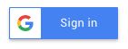

Voorwoord
TBA
Inleiding
Dit afstudeerproject is in opdracht van Fresh Heroes en Lifely. Fresh Heroes is een stagevacaturebank gespecialiseerd voor CMD Stages. Het is een vrij nieuwe stagebank die in maart 2017 live ging.
Lifely is een mediabureau dat zich specialiseert in het bouwen van webapplicaties voor bedrijven. Fresh Heroes is bedacht en gebouwd door Lifely, maar het plan is wel om er een zelfstandig platform van te maken.
In november 2017 is de eerste werknemer van Fresh Heroes aangenomen. Het uiteindelijke plan voor Fresh Heroes is om er een non-profit platform te maken dat wordt onderhouden door studenten voor studenten. Tijdens deze afstudeeropdracht is Lifely nog nauw betrokken bij Fresh Heroes en helpen zij ook mee met de ontwikkeling van het platform.
Toen ik dit project begon had het een andere invulling. Ik zou A/B testen gaan implementeren en deze gebruiken om de gebruikers registratie te verbeteren. Dit was echter wel een grote opgave, maar hierdoor kwamen we wel bij het huidige probleem: de gebruikers data is slecht inzichtelijk. Dit bleek een stuk behapbaarder te zijn en heb ik samen met mijn afstudeerbegeleider besloten hier op te gaan focussen. Door middel van mijn eindproduct kan Fresh Heroen nieuwe inzichten verkrijgen in de gebruikers en hun gedrag op de website.
Een van de knelpunten van dit project is het bouwen van de datavisualisaties. Het koste meer tijd dan ik had verwacht om de data die ik terugkreeg om te vormen zodat het bruikbaar was om een datavisualisatie mee te maken.
In dit rapport beschrijf ik het proces wat ik heb doorgelopen om tot mijn eindproduct te komen. In het eerste deel leg ik uit wat de situatie, context en probleemstelling is en hoe ik dit heb aangepakt. In het tweede deel ligt ik mijn onderzoek toe. Dit heb ik per onderwerp opgesplitst in de hoofdstukken Techniek, Gebruikersdata & Veiligheid en Datavisualisatie. Daarna volgen de hoofdstukken Validatie, Eindproduct, Conclusie en Aanbevelingen.
Management samenvatting
Business Intelligence Dashboard voor de Stagevacaturebank Fresh Heroes
Ik wil voor Fresh Heroes een oplossing maken waardoor zij makkelijker inzicht kunnen krijgen in hun gebruikers en hun acties op de website.
Door middel van het samenvoegen van gebruikersgedrag en data uit Google Analytics wil ik een oplossing bouwen waarmee de eigenaren van Fresh Heroes keuzes kunnen valideren en onderbouwen. Ik heb onderzoek gedaan naar datavisualisaties, de wensen van mijn gebruikers en de technische oplossingen. Met deze data heb ik een eerste oplossing gebouwd en deze getoetst aan mijn gebruikers. Omdat ik een werkend product wil opleveren sla ik een groot deel van de concept fase over en ontwerp ik direct in de browser met echte gebruikers data.
Ik doe veel deskresearch, met name op het gebied van datavisualisaties, daaruit komen dan belangrijke punten over wat een goede datavisualisatie nodig heeft. Ook bekijk ik naar bestaande dashboards en sla ik degene die mij inspireren op om zo een overzicht te krijgen naar verschillende mogelijkheden. Verder vraag ik vaak aan mijn gebruikers wat zij verwachten en vooral wat ze zouden willen bereiken meet de oplossing. In een later stadium ga ik mijn gemaakte oplossing testen bij mijn gebruikers om deze resultaten te verwerken in het product Als laatste heb ik ook onderzoek gedaan naar de privacy van het opslaan van gebruikersdata, gekeken of Fresh Heroes zich houdt aan de wet en wat ze kunnen doen om de privacy voor hun gebruikers te verbeteren.
Resultaten: Aan de hand van mijn onderzoek heb ik een benchmarking gemaakt van de deskresearch naar bestaande oplossingen en waar deze te kort schieten. Ook heb ik voor mijn datavisualisatie richtlijnen opgesteld waaraan deze moet voldoen. Omdat we gebruikers data opslaan is veiligheid en de gebruiker informeren ook belangrijk, daarom heb ik de huidige situatie geïnventariseerd en met de product eigenaar overlegd over het aanpassen van de gebruiksvoorwaarden en andere maatregelen. Door middel van de interviews heb ik een user requirements list, waarmee ik kan besluiten wat ik ga bouwen. Deze is geprioriteerd, omdat er niet genoeg tijd is alle punten te verwerken. Als laatste heb ik een werkend prototype dat bijna klaar is voor productie. Deze is gemaakt met een combinatie van deskresearch (bij kleine problemen), hulp van mijn collega’s (bij grote problemen) en peer reviews (bij onderdelen die klaar zijn voor testen).
Discussie: In mijn eerste iteratie van mijn opdracht zou ik geheel iets anders doen, maar door middel van interviews met de gebruikers ben ik erachter gekomen dat mijn huidige onderwerp veel relevanter voor ze is. In mijn deskresearch kwam ik vooral veel voorbeelden tegen van print datavisualisaties. Ik denk dat ik ook kwam omdat vooral boeken las over datavisualisatie en er meer informatie over interactieve datavisualisatie kan vinden via blogs en websites over design. Daarom moest ik goed kijken hoe ik door middel van interactie een extra laag aan mijn oplossing kan toevoegen. Een ander onderwerp wat lastig bleek was het onderzoek naar gebruikersdata en veiligheid. De wet is niet geheel duidelijk over waar deze data ondervalt en aan welke regels wij ons moeten houden.
Conclusie: De gebruikers van mijn oplossing denken op dit moment dat ze mijn oplossing wel kunnen gaan gebruiken en ondanks dat er nog weinig data in zit zijn er wel al resultaten uit voortgekomen. Het opslaan van onze eigen gebruikersgedrag in plaats van dit uit te besteden aan een gratis service met een limiet aan de opslag tijd is ook gelukt, wat een van de belangrijkste User Requirements is.
Orientatie
Probleemstelling
Een probleem bij Fresh Heroes is de gebruikersdata erg verspreid staat en dat gebruikers acties niet goed kunnen worden geanalyseerd. Op dit moment wordt er gebruik gemaakt van Mixpanel, Analytics en Hotjar om inzicht te krijgen in de gebruikers.
Het nadeel van al deze externe tools is dat niet alle gewenste data wordt gemeten, niet alles inzichtelijk wordt en dat de gratis en goedkope versies vaak limieten hebben op de hoeveelheid data die wordt opgeslagen. Dit zorgt ervoor dat de data niet voor lange termijn inzichten kan worden gebruikt. Ook is het op dit moment moeilijk in te zien hoe actief een gebruiker is en wat deze dan zoal doet op Fresh Heroes (zonder daarbij een filmpje te moeten kijken).
Drop-off rates en hoe lang een gebruiker er over doet om een bepaalde actie te ondernemen zijn dingen die ze graag willen meten maar wat op dit moment nog niet gebeurt.
Een ander probleem is dat het niet mogelijk is om data van het ene platform te combineren met het andere, waardoor je de nummers moeilijker kan vergelijken. Bijvoorbeeld: aantal sollicitaties op Mixpanel in combinatie met aantal pageviews van Analytics.
Als laatste is er al veel data beschikbaar, vooral op het gebied van vacatures en sollicitaties. Op dit moment zit er in het beheerders gedeelte geen mogelijkheid om deze data in te kunnen zien.
Doelstelling
Het doel van mijn opdracht is ervoor te zorgen deze data te stroomlijnen en te combineren met onze eigen data. Het project is geslaagd als Fresh Heroes nieuwe inzichten kan verzamelen over hun gebruikers en website via mijn product.
Omdat mijn voorliefde licht voor programmeren en het bouwen van producten die werken wil ik mij daar op focussen. Als we naar de User Experience Hierachy of Needs model van Stephen Anderson kijken (afbeelding 1), wil ik mij vooral focussen om het Useable niveau te bereiken.
Afbeelding 1) User Experience Hierarchy of Needs model van Stephen Anderson
{kind=link}
Oplevering
Mijn eindproduct is een uitbreiding op het huidige beheerders gedeelte, die gebruik maakt van echte data. De opgeleverde code is klaar voor productie en zorgt niet voor conflicten met het bestaande product.
Randvoorwaarden
Omdat ik werk aan een bestaand product in een bestaande codebase zijn er een aantal randvoorwaarden waar ik mij aan moet houden.
De backend is gebouwd met het PHP framework Laravel. Als ik aanpassingen aan de backend wil doen, zal ik ook php moeten schrijven.
De code moet opgeleverd worden via de bestaande Github repository. Ik mag mijn code alleen samenvoegen met het bestaande project als deze geen erros oplevert.
Hoofdvraag
Na het vaststellen van het probleem en doelstelling ben ik op de volgende hoofdvraag gekomen:
Hoe kan een digitale oplossing Fresh Heroes helpen om meer inzicht te krijgen in de acties van gebruikers op de website?
Deelvragen
Ik heb de hoofdvraag verdeeld in meerdere deelvragen, samen geven deze antwoord op de hoofdvraag.
- Op welke manieren kan ik in Laravel events bijhouden?
- Welke manieren zijn er om datavisualisaties te maken en welke passen het beste bij mijn project?
- Welke data wil Fresh Heroes inzichtelijk krijgen?
- Welke soorten datavisualisaties zijn er?
- Welke bestaande oplossingen zijn er al voor het bijhouden van gebruikersdata?
- Hoe bepaal je welke grafieksoort je kiest voor je data?
- Hoe ga je om met gebruikersdata?
Context
Huidige situatie
Fresh Heroes is al een draaiende website, bij mijn opdracht is het niet de bedoeling dat ik de huidige website drastisch verander. Daarom is het belangrijk dat ik weet hoe de huidige situatie er uitziet.
Product
Fresh Heroes is een website waarop bedrijven stages kunnen plaatsen en studenten op kunnen solliciteren. Hier onder volgens een paar screenshots om een indruk te geven van de website. Om een betere indruk te krijgen kun je ook zelf een kijkje nemen op Fresh Heroes.
Reguliere gebruikers
 Afbeelding 2) Home
Afbeelding 2) Home
 Afbeelding 3) Home - lijst met beschikbare stages
Afbeelding 3) Home - lijst met beschikbare stages
 Afbeelding 4) Vacature
Afbeelding 4) Vacature
 Afbeelding 5) Sollicitatie schrijven (alleen zichtbaar voor studenten)
Afbeelding 5) Sollicitatie schrijven (alleen zichtbaar voor studenten)
 Afbeelding 6) Uitstaande vacatures (alleen zichtbaar voor bedrijven)
Afbeelding 6) Uitstaande vacatures (alleen zichtbaar voor bedrijven)
 Afbeelding 7) Stage-ervaringen (alleen zichtbaar voor bedrijven)
Afbeelding 7) Stage-ervaringen (alleen zichtbaar voor bedrijven)
Admin gebruikers
Voor mensen met admin rechten (dit zijn alleen mensen die werken bij Fresh Heroes of Lifely), is er ook nog het admin gedeelte. Hier in komt ook mijn product te staan.
- In de huidige situatie is de volgende data inzichtelijk voor administratoren:
- Hoeveel bedrijven en studenten geregistreerd zijn
- Welke bedrijven door wie beheerd worden, data over
- Informatie over de drie servers Staging, Acceptance en Productie
- Wanneer er een mailings worden verstuurd, hoeveel en over welke categorieën
- Een overzicht van alle vacature promoties
- Informatie over bedrijfs jungles
Hieronder volgen een paar screenshots om een indruk te geven.
{kind=link}
 Afbeelding 9) Mailings
Afbeelding 9) Mailings
 Afbeelding 11) Promoties
Afbeelding 11) Promoties
 Afbeelding 12) Jungle
Afbeelding 12) Jungle
Data
Voor het meten van gebruikers gedrag en hun acties worden nu tools van derde partijen gebruikt: Mixpanel, Analytics en Hotjar.
Mixpanel voor bepaalde acties, zoals het bekijken van bepaalde pagina’s of sollicitaties. Ook wordt hun gebruikers overzicht gebruikt. Een nadeel voor Mixpanel is dat het op dit moment een gratis versie is en de data niet langer dan 60 dagen wordt bewaard. Ook de betaalde versie voor startups ligt niet binnen het budget en zelfs daar blijft de data maximum een jaar beschikbaar.
Analytics is voor de metrische data zoals wie wanneer de site bezoekt en hoe lang. Analytics is van Google en is erg uitgebreid in het aantal functionaliteiten. Dit is zo wel een voor- als nadeel aangezien het ook zorgt voor een leercurve. Google heeft daarom Analytics Academy gemaakt, om hun gebruikers te leren om te gaan met deze tool.
Hotjar wordt gebruikt voor de heatmaps en de opnames van gebruikers interactie. Een nadeel van Hotjar is dat de data alleen beschikbaar is op hun website en niet via een api of op een andere manier.
Ook wordt er al veel data bijgehouden in Fresh Heroes. Een overzicht van het huidige datamodel kan je vinden in Bijlage 1. De belangrijkste data die op dit moment wordt bijgehouden is de informatie over de vacatures, bedrijven en de gebruikers.
Door te kijken naar de aantallen van deze tabellen in bepaalde periodes kunnen al interessante conclusies getrokken worden. Denk hierbij aan dingen als welke vacatures het interessantste zijn, hoeveel vacatures een bedrijf plaatst en wanneer of op welk type vacature gebruikers het meest solliciteren.
 Afbeelding 13) De drie belangrijkste (bestaande) datatabelen in project
Afbeelding 13) De drie belangrijkste (bestaande) datatabelen in project
Veiligheid
TBA - Wachten op interview my Bryan…
Gebruikersdata en Veiligheid
Een groot deel van dit project gaat over het verzamelen van data en dit gebruiken om een product te verbeteren. Gebruikersdata kan positief gebruikt worden (zoals bij het verbeteren van producten), maar de angst bestaat dat deze data misbruikt kan worden en gebruikers kunnen schaden. Een voorbeeld hiervan zijn datalekken bij sites. Laatst nog in Amerika bij Equifax, waarbij de data van zo’n 143 miljoen gebruikers buit was gemaakt door hackers(Ng, 2017). Ook moet in Nederland is dit een probleem. Rond 25 september 2017 was er bekend gemaakt dat hackers sinds november 2016 toegang hadden tot admin accounts en het mailsysteem van Deltaloid (Hopkins, 2017).
Over de privacy van het verzamelen van data wordt ook in de politiek veel gesproken. In februari 2017 heeft de tweede kamer de nieuwe Wet op de inlichtingen- en veiligheidsdiensten (ook wel de Sleepwet genoemd) aangenomen. In juli 2017 kwam deze ook door de eerste kamer (“Eerste Kamer der Staten-Generaal - Wet op de inlichtingen- en veiligheidsdiensten 2017 (34.588)”, z.d.), wat betekent dat vanaf januari 2018 de inlichtingendiensten veel meer data mogen gaan verzamelen, ook van mensen die bijv. in dezelfde straat wonen als de verdachte.
Verder wordt er op het internet overal data verzameld. Een voorbeeld hiervan zijn de reclames die producten adverteren waarop jij net nog gezocht hebt. Dit gebeurt door middel van trackers en cookies die je ongevraagd binnen krijgt als je het internet gebruikt zonder adblockers en add-ons om deze trackers uitzetten.
 Afbeelding 14) Een voorbeeld van een advertentie nadat ik een vraag over ‘svg’ had gegoogled
Afbeelding 14) Een voorbeeld van een advertentie nadat ik een vraag over ‘svg’ had gegoogled
Ook zijn er mensen die hier op tegen zijn. Zo is het een groep gelukt om een referendum over de Sleepwet te krijgen. Verder kun je veel artikelen en blogs vinden met informatie en tips om je eigen privacy te verbeteren, bijvoorbeeld op de website van de Consumentenbond. Mensen beginnen het belangrijk te vinden om controle te hebben over wie hun data verzamelt en gebruikt. Zo antwoorden in oktober 2016 86% van de ondervraagden van het EenVandaag opiniepanel de vraag ‘Hoe belangrijk is online privacy voor jou?’ met heel belangrijk of redelijk belangrijk.
Aanpak
Een van mijn doelen in dit project is een werkend product op te leveren, wat klaar is voor gebruik. Daarom heb ik zodra mijn user requirements duidelijk waren heb ik ze opgedeeld volgens de MoSCoW-methode (“DSDM Atern Handbook (2008)”, 2015).
Aan de start van dit project was ik van plan met duidelijke development sprints van twee weken te werken, om zo duidelijke stappen te kunnen maken.
In de praktijk bleek dat sprints van een week handiger waren. Dit komt omdat het maken van de datavisualisaties lastiger bleek dan ik dacht en meer tijd kosten. Door sprints van een week te gebruiken kan ik mij focussen op een a twee visualisaties per week en deze goed afronden.
De technische planning lijkt op een kleine waterval:
- Het inbouwen van events op de backend
- Het ophalen van google analytics data en eigen event data
- Het bouwen van de data visualisaties
Ik heb hiervoor gekozen omdat ik zonder de vorige stap de volgende niet kan uitvoeren.
Onderzoek
Behoeften van Fresh Heroes
Omdat Dirk Hoekstra, developer, pas in november 2017 is komen werken bij Fresh Heroes heb ik hem niet geïnterviewd over zijn behoeften en verwachtingen.
Barry Kraakman (Product Owner)
Barry is de Product Owner van Fresh Heroes. Dat betekent dat hij zich bezighoudt met de dagelijkse gang van zaken. Dit is gevarieerd werk, van het rekruteren van nieuwe bedrijven tot het helpen van gebruikers die vast zitten. Ook houdt hij zich bezig met de marketing en helpt hij bedrijf met hun vacatures.
In zijn werk merkt hij vaak dat hij data mist om potentiële klanten te overtuigen, dat het lastig is om uit de gebruikte tools de data te halen die hij nodig heeft of dat sommige acties nog niet worden gemeten.
Ook is een groot knelpunt dat de data van Mixpanel maar 60 dagen beschikbaar is, waardoor deze niet genoeg informatie levert als Barry een plan probeert te maken voor de lange termijn.
Als laatste zou hij het ook fijn vinden als de belangrijkste informatie op dezelfde plek zou staan, waardoor hij minder hoeft op te zoeken en minder tijd kwijt is.
De belangrijkste data die hij mist is informatie over vacatures en sollicitaties, zodat hij bedrijven kan helpen met de timing van hun vacatures. Daarnaast is het versturen van emails niet makkelijk en vroeg zich af of dat ook versimpelt kon worden, maar dat is van minder hoge prioriteit.
Pim Verlaan (Lifely Founder en Concepter)
Pim is een van de oprichters van Lifely en heeft het concept van Fresh Heroes bedacht en ontwikkelt. Toen Barry stage kwam lopen bij Lifely heeft hij het project aan hem overgedragen, maar is nog steeds betrokken bij de strategie achter Fresh Heroes.
In mijn interview met Pim werd het al snel duidelijk dat hij meer nadenkt over de lange termijn en de kosten die het bouwen en onderhouden met zich meebrengen. Zo zou hij graag willen zien hoe vaak een nieuwe feature gebruikt wordt, om zo te kijken welke wel de moeite waard waren en welke niet.
Ook had hij het over Key Performance Indicators, de belangrijkste dingen waaraan je kan zien of Fresh Heroes goed draait. Het zou fijn zijn als deze konden worden vastgelegd en er snel zichtbaar zou zijn of deze worden behaald.
Daarnaast hebben wij het ook gehad over groeien. Meten is daarbij een belangrijk onderdeel, volgens Pim. Als Fresh Heroes weet hoeveel mensen waar en wanneer afvallen, kan dit worden verbeterd. Na de verbeteringen kan je dan snel je gebruikers op bouwen via marketing. Als laatste hebben wij het gehad over de kwaliteit van gebruikers. Op dit moment is dat niet inzichtelijk, maar het zou helpen een beeld te geven wat een gebruiker doet op de website. Zo zou Fresh Heroes kunnen analyseren waarom sommige gebruikers actiever zijn dan andere en er achter komen waaraan dat ligt.
User Requirements List
Aan de hand van de interviews heb ik de onderstaande user requirements uitgewerkt en verdeeld volgende MoSCoW-methode (“DSDM Atern Handbook (2008)”, 2015). Ik heb hierbij de “Won’t have” weggelaten. De tijd van het project alleen genoeg is voor een MVP, waardoor alles wat niet in de “Must have” lijst staat een “Won’t have” zou worden.
De user requirements list wordt vaak gewijzigd als de gebruikers op nieuwe dingen komen. Daarna overleg ik met hun hoe belangrijk dit is en plaatst ik deze op de juiste plek in de lijst.
 Afbeelding 15) Barry vraagt om of bepaalde informatie ook inzichtelijk wordt in mijn oplossing
Afbeelding 15) Barry vraagt om of bepaalde informatie ook inzichtelijk wordt in mijn oplossing
Om verwarring te voorkomen gebruik ik voor de gebruikers van Fresh Heroes ‘users’ en voor de gebruikers van mijn oplossing ‘gebruikers’.
Must Have
- De gebruiker wil snel informatie kunnen aflezen
- De gebruiker willen zo ver mogelijk terug kunnen kijken in de data
- De gebruiker wil kunnen zien of er gebruikers acties zijn die niet gebeuren
- De gebruiker wil processen inzichtelijker krijgen (Bijvoorbeeld: hoeveel mensen komen op de registratiepagina en hoeveel ronden een registratie af)
- Registratie funnel (pagina bezoek -> registreren -> account activeren)
- Sollicitatie funnel (Vacature bezoek -> sollicitatiepagina bezoek -> solliciteren)
- De gebruiker in de volgende punten inzicht krijgen
- Top 10 bekeken pagina’s
- Usersessies (per week, per periode)
- User behoud
- User acquisitie (Welke kanalen, hoeveelheid, Welke social media)
- Users (Aanmeldingen, per soort, )
- Sollicitaties (per week, per periode, per categorie)
- Vacatures (per week, per periode, per categorie, welke er nu actief zijn)
Should Have
- De gebruiker wil Key Performance Indicators aan kunnen geven
- De gebruiker wil kunnen zien of de Key Performance Indicators worden behaald
- De gebruiker wil een overzicht van alle Fresh Heroes Users
- De gebruiker wil in de volgende punten inzicht krijgen
- Stage ervaringen
- Nieuwsbrief aanmeldingen (bijv. vs. studenten)
- Stagevergoeding en aantal sollicitaties
- Stagejungle (Wanneer, Wie, sollicitaties)
Could Have
- De gebruiker wil de resultaten van unit tests in kunnen zien
- De gebruiker wil de kwaliteit van users kunnen zien
- Hoe vaak wordt een vacature geplaatst door een user
- Hoe vaak solliciteert een user
- Hoe vaak is de user op Fresh Heroes
- Is de user aangemeld voor de nieuwsbrief
- De gebruiker wil automatische mailings kunnen klaarzetten
- De gebruiker wil de drop off rates kunnen zien (per pagina, per event)
- De gebruiker wil de visualisaties kunnen exporteren voor gebruik in presentaties
Techniek
In dit hoofdstuk beschrijf ik de technische onderdelen van mijn project en wat ik gedaan heb om deze te realiseren.
Events
Na het opstellen van mijn user requirements list was het duidelijk dat het belangrijk was dat ik al vroeg begon met de ontwikkeling. Veel van de data die ze willen zien werd niet opgeslagen of kon niet worden geëxporteerd uit Mixpanel. Uit mijn literatuuronderzoek werd aangeraden om vooral te werken met echte data, maar die was niet aanwezig. Daarom werd het maken van events en deze lanceren op de website een prioriteit.
Wat zijn events
Wanneer ik het heb over een event heb ik het over een gebeurtenis die wordt vastgelegd zodat de programmeur er iets mee kan, bijvoorbeeld opslaan in een database (“Introduction to events”, z.d.). Simpel gezegd is een event alles wat de gebruiker bewust doet, van het klikken op een knop tot het solliciteren op een vacature.
Voor mijn product tracken wij niet alle events, maar alleen degene waar Fresh Heroes data over wilt verzamelen. Welke events dit zijn bepaal ik aan de hand van mijn user requirements list en de events de op dit moment gemeten worden met Mixpanel.
Waarom slaan wij zelf gebruikers events op?
Volgens mensen als Tristan Handy is het eigenlijk zonde van de tijd om in de beginfase van een start up je eigen events te gaan tracken. Dit klopt ook, voor de meeste start ups (Handy, 2017). Fresh Heroes heeft het voordeel dat ze uit een bestaand bedrijf voorkomt, waardoor zij kan leunen op de kennis en ervaring die daar al zit. Ook helpt het dat ik geen medewerker ben, ik doe dit als afstudeer project waardoor de developer van Fresh Heroes door kan bouwen aan het bestaande product.
Tristan stelt zelf alternatieven voor, maar deze kosten op zijn minst 500 dollar per maand voor business intelligence tools als Mode en Looker. Dit past niet binnen het budget van Fresh Heroes.
Ook als we alleen de pro versie van Mixpanel gebruiken krijg kan je de event data maar van een jaar terug zien. Een van de belangrijke user requirements is de mogelijkheid zo ver mogelijk terug te kijken in hun event data waardoor dit geen optie is en het uiteindelijk beter is om het zelf bij te houden.
Er zijn ook mensen die hier anders over denken, Tomi Mester is zelf voorstander dan bedrijven al redelijk snel overgaan op het vergaren van eigen data. Hij noemt zelf drie problemen waar je tegenaan kan lopen wanneer de 3e partijen gebruikt voor het vergaren van data is zijn blog post “When and why to build your own data tools?” (Mester, 2017). Deze zijn:
- Je kan niet alle verbindingen leggen
- Je moet moeilijk dingen voorspellen
- Je kan je data niet volledig vertrouwen
Bij Fresh Heroes ligt het probleem voorals bij probleem een en twee. Probleem drie speelt op dit moment nog geen grote rol omdat we een klein aantal 3e partijen gebruiken die alledrie andere dingen bijhouden.
Het eerste probleem ontstaat doordat de data die je nodig hebt bij verschillende partijen staat. Het combineren van verschillende services is lastig omdat je afhankelijk bent van hoe zij de data aan jou aanleveren. Sommige sites leveren niet eens de mogelijkheid je data te exporteren zonder dat je er voor betaalt. Wanneer je je eigen data bijhoudt heb je deze problemen niet, je hebt volledige controle over wat je bijhoudt en hoe je dat doet.
Probleem twee staat daarvan in het verlengde, vooral als je het houdt bij de gratis versies van deze producten. Om een goede voorspelling te kunnen doen heb je veel data nodig, over een zo lang mogelijke tijd. Gratis versies zijn vaak gelimiteerd, meestal in hoelang de data beschikbaar is.
Bij Fresh Heroes is dit vooral een probleem, je kan geen stage periodes met elkaar vergelijken als je maar 60 dagen terug kan kijken. Een korte stage is 10 weken en een lange stage 20. Met de gratis versie van Mixpanel kan je dus niet eens de gehele stageperiode in zien. Dit maakt het niet mogelijk om goede voorspellingen te kunnen doen met de huidige data, maar als we dit zelf opslaan kunnen we zo ver terug kijken als we willen.
Data Model van Events
 Afbeelding 16) Analytics_events tabel
Afbeelding 16) Analytics_events tabel
Samen met Rick heb ik de bovenstaande tabel bedacht. De analytics_events is geen grote tabel op het eerste oog en heeft een optionele relatie met de User tabel. Verder heeft het een naam, meta_data en wordt er bijgehouden wanneer hij gemaakt is en geupdate.
De naam wijst naar het soort event, alle events die te maken hebben met vacatures beginnen met vacancy. en daarna wat de gebruiker gedaan heeft.
In meta_data worden dingen over de context opgeslagen in een JSON formaat. Denk hierbij aan dingen als welke vacature er bekeken is, de naam van de vacature en in welke categorie deze zit.
Op advies van Rick heb ik voor deze structuur gekozen, omdat events erg verschillend zijn en andere context hebben. Als we al deze waardes een eigen kolom zouden geven wordt de tabel onoverzichtelijk en zijn het merendeel van de waardes leeg.
Een voorbeeld van meta_data op een vacancy.view event:
{
"route":"vacancy.view",
"vacancy_id":350,
"vacancy_name": "Online Marketing - SEO, SEA, Copywriting",
"url":"https:\/\/freshheroes.com\/the-online-group\/stage-online-marketing-seo-sea-copywriting"
}
IImplementatie van events
Voor de events van Fresh Heroes maak ik gebruik van de events functionaliteit in Laravel (“Events - Laravel - The PHP Framework For Web Artisans”, z.d.). In dit stuk leg ik uit hoe deze werkt en tot stand is gekomen. Ik heb hierbij hulp gehad van Lifely developer Rick Lancee. De nieuwe versie van de database met events kun je vinden in bijlage 2.
Events in laravel werken met Listeners. Deze doen wat de naam impliceert, ze luisteren constant of een bepaald event wordt aangeroepen.
Het event waar mijn listener naar heet AnalyticsEventFired. Hierin worden de velden die een event ontvangt opgeslagen en doorgegeven aan de Listener. Een AnalyticsEventFired heeft een naam, meta_data en een user. Wanneer er geen meta_data wordt meegegeven wordt dit opgeslagen als een lege array en als er geen user wordt meegegeven is dit null.
class AnalyticsEventFired
{
use SerializesModels;
public $eventName;
public $metaData;
public $user;
/**
* Create a new event instance.
*
* @param string $eventName
* @param array $metaData
* @param user $user
* @return void
*/
public function __construct(string $eventName, array $metaData=[], User $user=null)
{
$this->eventName = $eventName;
$this->metaData = $metaData;
$this->user = $user;
}
}
De listener heet SaveAnalyticsEvent. Deze luistert of het event AnalyticsEventFired is afgevuurd:
class SaveAnalyticsEvent implements ShouldQueue {
public function handle(AnalyticsEventFired $event)
{
$analyticsEvent = new AnalyticsEvent([
'name'=>$event->eventName,
'meta_data'=> $event->metaData,
'fired_at'=>$event->firedAt,
]);
if($event->user) {
$analyticsEvent->user()->associate($event->user);
}
$analyticsEvent->save();
}
}
Zodra dat gebeurt maakt hij een nieuw AnalyticsEvent aan, vult deze met de data die hij meekrijgt van het event en slaat hem. Dat is het enige wat hij doet.
Om een event af te vuren moet het worden aangeroepen op plekken waar iets interessant gebeurt, bijvoorbeeld het bekijken van een vacature of een sollicitatie.
Zo roep je in Laravel een event aan:
event(new AnalyticsEventFired('vacancy.view', [
'route' => 'vacancy.view',
'vacancy_id' => $vacancy->id,
'vacancy_name' => $vacancy->name,
'url' => route('vacancy.view', ['company' => $company, 'vacancy' => $vacancy]),
'category_id' => $vacancy->category()->get()->first()->id
], Auth::user()));
Met new AnalyticsEventFired zeg ik dat het een nieuw event is, in de parameters geef ik dan eerst aan hoe het event heet (vancancy.view), geef ik de meta_data mee in een associative array en als laatste geef ik de user mee. Deze komt dan in eerst in het event terecht en wordt dan doorgegeven aan de listener die hem opslaat.
Technisch gezien zouden we ook event direct kunnen opslaan, maar wij hebben gekozen om events te gebruiken om de volgende redenen:
Een event is onafhankelijk van zijn listeners. Een event zegt alleen maar dat er iets gebeurt is met wat extra informatie. Het geeft de mogelijkheid meerdere dingen uit te voeren zonder deze handmatig aan te roepen. Als er ooit besloten wordt om de tellingen van events op te slaan kan er nog een listener gemaakt worden die naar hetzelfde event luistert, dan hoeft dit maar op een plek te worden toegevoegd en niet op elke plek waar een event wordt aangeroepen.
Als er een error optreed in het event blijft de rest van de code gewoon door draaien. Dit is fijn voor de user, omdat het voor hun weinig uitmaakt of het event slaagt of niet
Het is netter, een event gebeurt pas nadat iets gebeurt is terwijl een functie aangeeft dat iets op het punt staat te gebeuren
Het is erg makkelijk om events te queuen, dat betekent dat ze niet direct worden uitgevoerd, maar pas later. Dit is beter voor de gebruikers omdat ze dan minder lang hoeven te wachten.
Lijst van events
Doordat ik de naming heb overgenomen van mixpanel is de benaming van camelCase en underscores inconsistent. Ik heb dit bewust voor nu zo gelaten, voor als we toch besluiten de data uit mixpanel te exporteren dat deze dan overeenkomt met de huidige data.
Deze events zijn beschikbaar in mijn oplossing:
- auth
.activate
.claim.view
.password_reset
.password_reset.view
.register
.register.view - admin.view
- company.view
- home
.distanceFilter
.filter - login
- vacancy
.apply
.applyView
.create
.delete
.deleteConfirm
.deleteHasApplication
.edit
.favorite
.report.invite
.report.invite.cancel
.subscribe
.subscribeView
.view
Verbeteringen na test in de praktijk
Nadat de events werkend waren heeft Rick ze voor mij gedeployed op de huidige website. Hier hebben ze vijf dagen gedraaid voordat ik de binnengehaalde data ging evalueren. Al snel werden een paar dingen duidelijk.
Home.view events zijn een slecht idee Doordat er een home.view event was werden er veel events aangemaakt waar Fresh Heroes weinig aan heeft. Deze events zorgden ervoor dat de database langzaam werd als ik data wou ophalen uit analytics_events.
Google Analytics houdt dit ook bij en deze hebben een api waaruit we de data kunnen opvragen. Daarom heb ik samen met Bryan (Lifely developer) en Rick besloten om dit event er uit te halen.
 Afbeelding 17) Meer dan 24 duizend events na vier dagen live, ongeveer 80% bleek home.view events te zijn
Afbeelding 17) Meer dan 24 duizend events na vier dagen live, ongeveer 80% bleek home.view events te zijn
Het is niet zichtbaar welke events in dezelfde sessie gebeuren Doordat we de id’s van users opslaan in events werd wel duidelijk welke events door dezelfde gebruikers gedaan zijn en door de fired_at konden we wel een idee krijgen welke waarschijnlijk bij elkaar hoorde als de gebruiker is ingelogd. Dit geld niet voor gebruikers zonder account, al deze zijn niet van elkaar te onderscheiden.
Rick wees mij erop dat je met Laravel gemakkelijk de HTTP Sessie kan opvragen en meegeven aan het event. Nu kunnen we via de session id kijken hoeveel unieke gebruikers een vacature bekijken.
 Afbeelding 18) De geupdate analytics_events tabel
Afbeelding 18) De geupdate analytics_events tabel
Category_id toevoegen aan de meta_data van vacancy events Ik kwam er achter dat als ik van een vacancy event wil weten in welke categorie deze zit ik eerst de vacature moest opvragen en daarna pas de categorie krijg. Dit moet individueel voor elk event, vaak is dat 200x. Dat is een zware klus voor de database, waardoor de pagina erg langzaam wordt. Een oplossing hiervoor is om het category_id alvast op te slaan in de meta_data voor vacancy events. Samen met Dirk Hoekstra (Fresh Heroes developer) heb ik hier een migration voor geschreven. Deze past de bestaande data aan waardoor alle vacancy events een category_id krijgen.
Hier onder een voorbeeld van de geupdate vacancy meta_data
{
"route":"vacancy.view",
"vacancy_id":350,
"vacancy_name": "Online Marketing - SEO, SEA, Copywriting",
"url":"https:\/\/freshheroes.com\/the-online-group\/stage-online-marketing-seo-sea-copywriting",
"category":5
}
Ophalen van data
Nu er events zijn en deze informatie bevatten moet deze informatie gestuurd worden van de backend naar de frontend van de applicatie. In dit hoofdstuk laat ik zien hoe we de data ophalen en doorsturen naar de voorkant.
MVC
Onze applicatie werkt volgens het MVC-model, dat staat voor Model, View, Controller.
De Model staat voor het data model, daar heb ik in het hoofdstuk Events meer over uitgelegd. In het kort is dat de plek waar de data staat.
<?php
namespace App\Models;
use Illuminate\Database\Eloquent\Model;
class AnalyticsEvent extends Model
{
protected $fillable = ['name', 'user_id', 'meta_data', 'fired_at', 'session_id'];
protected $casts = [
'meta_data'=>'object'
];
protected $dates = [
'fired_at'
];
public function user()
{
return $this->belongsTo(User::class, 'user_id');
}
}
De View doet wat de naam impliceert, het laat dingen zien. In Laravel is dat het template waar de html en php code instaat.
@extends('layouts.dashboard')
@section('subcontent')
<article class="ss-admin ss-admin--stats">
@include('dashboard.admin.subnav')
@include('dashboard.partials.notifications')
<section class="ss-admindashboard">
<div id="ss-signin"></div>
<section class="ss-admindashboard--section">
<div class="ss-graph ss-graph--bar ss-graph--mostVisitedPages"></div>
<div class="ss-graph ss-graph--bar ss-graph--sessionsPerDay"></div>
</section>
<section class="ss-admindashboard--section">
<div class="ss-graph ss-graph--bar ss-graph--pageViewsForPage"></div>
</section>
</section>
@endsection
@push('scripts')
<script>
window.fhAnalyticsEvents = {!! $analyticsEvents !!};
</script>
<script src="https://apis.google.com/js/client:platform.js" async defer></script>
<script src="{{ url()->asset(mix('js/adminDashboard.js')) }}" defer></script>
@endpush
@push('head-scripts')
<meta name="google-signin-client_id" content="494089095163-va551douo4p5vu7idjpu5tlp1i1vc21d">
@endpush
In de Controller kan je data ophalen en manipuleren. Hiermee bedoel ik dingen als een nieuw event opslaan, of een nieuwe gebruiker aanmaken. Via de Controller kan je ook data meegeven aan de View. Zo kan je bijvoorbeeld de username laten zien van een ingelogde gebruiker.
<?php
namespace App\Http\Controllers\Dashboard\Admin;
use App\Http\Controllers\Controller;
use App\Models\AnalyticsEvent;
use Carbon\Carbon;
use SEO;
class EventsController extends Controller
{
public function index()
{
$fromDate = Carbon::now()->subWeek()->startOfDay();
$analyticsEvents = AnalyticsEvent::orderBy('fired_at', 'desc')->whereDate('fired_at', '>', $fromDate)->get();
SEO::setTitle(__t('dashboard.admin.companies.seo.title'));
return view('dashboard.admin.events.view', [
'analyticsEvents' => $analyticsEvents->toJson(),
'date' => $fromDate,
]);
}
}
[TBA: diagram van mvc]
Afbeelding 19) Een diagram van het MVC-model.
Voor mijn oplossing haal ik dus de event data op uit het Model in de Controller en geef ik die door aan de View. In de View kan ik deze weer meegeven aan het window object in een script tag. Vanuit daar kan ik het uitlezen in javascript en gebruiken voor een visualisatie.
Meegeven in de view:
@push('scripts')
<script>
window.fhNewUsers = {!! $newUsers !!};
</script>
<script src="{{ url()->asset(mix('js/adminDashboard.js')) }}" defer></script>
@endpush
Uitlezen in javascript:
const newUsers = fhNewUsers;
Waarom niet via AJAX?
Ajax staat voor Asynchronous Javascript and XML (“Ajax”, z.d.). Hiermee kan je een request doen om data op te vragen in javascript. Dit heeft het voordeel dat je niet hoeft te refreshen als je nieuwe data wilt en je ook regelmatig verse data kan ophalen.
De manier van data ophalen die ik beschreven heb ik het vorige hoofdstuk werkt, maar is een minder mooi dan Ajax.
Om AJAX te gebruiken voor het ophalen van Data moeten er urls komen waarop deze data te vinden is. Hiervoor moeten veel Routes worden aangemaakt in de Router. Routes zijn letterlijk de URL’s van de applicatie en de Router zorgt er voordat de je de juiste Controller er aan koppelt.
De meeste routes hebben een Controller en een View, maar je kunt ze ook gebruiken zonder View. In plaats van een View meegeven met data stuur je dan direct de JSON naar de browser. Deze pagina heeft dan ook geen styling, maar laat alleen de data zien.
<?php
namespace App\Http\Controllers\Dashboard;
use App\Http\Controllers\Controller;
use App\Models\Tag;
class TagController extends Controller
{
public function index()
{
$tags = Tag::all();
return $tags->toJson();
}
}
Samen met Rick heb ik besloten om niet voor deze manier te kiezen omdat het makkelijker is om de Controller voor de pagina met visualisaties te gebruiken en het mij veel tijd gaat besparen om geen extra Routes te moeten maken. Deze optie wordt wel meegenomen als aanbeveling omdat het gebruik van AJAX de user experience kan verbeteren (Brody, 2015).
Google Analytics
Om aan sommige user requirements te kunnen voldoen heb ik data nodig die wij zelf niet makkelijk bij kunnen houden met events. Deze data is wel beschikbaar in Google Analytics, dit was al eerder geïmplementeerd in Fresh Heroes door Rick en Bryan.
Google Analytics heeft een API om de data op te halen, de Google Analytics Reporting API. Deze kan op verschillende manieren aangeroepen worden, maar om tijd te besparen heb ik ervoor gekozen om dit via javascript te doen.
Voor de Reporting API heb je de google API client en Sign-in library nodig, deze kun je gebruiken door de volgende regel toe te voegen in je code:
<script src="https://apis.google.com/js/client:platform.js"></script>
Wanneer deze is ingeladen kun je de Google Api aanroepen in je javascript als gapi. Om data op te kunnen vragen moet je wel ingelogd zijn met een Google Account dat toegang heeft tot analytics. Dit doe je door een Google Sign In button te renderen:
<div id="ss-signin"></div>
const renderButton = (function() {
gapi.signin2.render('ss-signin', {
'onsuccess': displayResults,
'onfailure': onFailure,
'theme': 'dark'
});
})();
Als je dit op de juiste manier doet krijg je de button te zien:
 Afbeelding 20) Google sign-in button
{kind=link}
Als dat gelukt is kan je data gaan opvragen met gapi.client.request. Een standaard request naar de Reporting API ziet er als volgt uit:
gapi.client.request({
path: '/v4/reports:batchGet',
root: 'https://analyticsreporting.googleapis.com/',
method: 'POST',
body: {
reportRequests: [
{
viewId: 'XXXX',
dateRanges: [
{
startDate: '7daysAgo',
endDate: 'today'
}
],
metrics: [
{
expression: 'ga:uniquepageviews'
}
]
}
]
}
});
Wanneer deze code code wordt uitgevoerd krijg je terug hoeveel unieke pageviews er totaal waren op je website. Je kunt de queries uitbreiden, zo kan je dimensies aan de data geven door een dimensions array toe te voegen aan het object in reportRequests:
dimensions: [
{
name: 'ga:pagePath'
}
]
Als je dit zou toevoegen aan de query voor pageviews, krijg je het aantal unieke pageviews per pagina van je website.
Zo kun je meerdere dingen toevoegen zoals het aantal resultaten wat je wilt zien of je kunt de resultaten al vast laten ordenen. Een complete lijst van mogelijkheden is te vinden in de documentatie van de Reporting API bij Creating a report and Advanced use cases.
Keuze voor D3
Ik heb bewust geen uitgebreid onderzoek gedaan naar de keuze van datavisualisatie frameworks. In het derde jaar van mijn opleiding heb ik les gehad in D3, dat staat voor Data Driven Documents. Ook bij Lifely heb ik meegeholpen aan een project waar ook gebruik gemaakt werd van D3. Omdat ik hier al ervaring mee heb leek mij het de beste keuze om in de korte tijd van het project.
Ook heb ik vertrouwen in mijn keuze omdat D3 ook door grote partijen als de New York Times (“Gallery · d3/d3 Wiki”, z.d.) wordt gebruikt om datavisualisaties te maken. D3 is ook een project dat actief onderhouden wordt, ondanks dat het al 6 jaar bestaat. Verder is er een actieve community en veel voorbeelden en uitleg waar ik uit kan putten als ik vast zit.
Hoe werkt D3?
D3 is een javascript framework waarmee je elementen kunt manipuleren op basis van data. Je koppelt de data aan de elementen, hierdoor kun je aan de hand van de data de elementen aanpassen. Zo kan je dezelfde data gebruiken om een barchart te maken, maar ook een cirkeldiagram.
D3 heeft ook veel handige functies, zo kan aan de hand van je data uitrekenen hoe hoog je de bars in je bar chart moeten zijn en wat handige stappen zijn voor je assen. Hiervoor zijn de scale functies erg handig. De schaal (scale in het engels) is de manier waarop een abstracte waarde (bijvoorbeeld het aantal views op een pagina) wordt omgezet naar een visuele waarden, zoals de hoogte van een bar in een bar chart.
Omdat D3 te groot is om helemaal te behandelen ligt ik vooral toe hoe we de data omzetten in elementen. Ik heb gekozen dit toe te lichten omdat ik hier in het begin het meeste moeite mee had.
Data toevoegen
Een van de belangrijke principes in D3 is de data join. Hiermee kan je meerdere elementen in een keer maken, op basis van de data. Hierbij gelden wel wat andere principes. Normaal vertel jij via je code wat er moet gebeuren, maar bij een data join vertel je D3 wat je wilt. In het voorbeeld hieronder worden voor elk datapunt cirkels gemaakt:
svg.selectAll("circle")
.data(data)
.enter().append("circle")
.attr("cx", function(d) { return d.x; })
.attr("cy", function(d) { return d.y; })
.attr("r", 2.5);
(code voorbeeld van Chuck Grimmett; we gaan er vanuit dat SVG leeg is)
Met deze code zeggen we tegen d3 dat voor elk element in de data array er een cirkel toegevoegd moet worden. Eerst doen we een selectie op alle circle elementen, hieruit komt een lege selectie, omdat er nog niks staat in de svg. Daarna koppelen we deze selectie aan de data door middel van .data(data).
Wanneer je data koppelt aan een selectie krijg je drie andere selecties terug: enter (datapunten die nog geen element heeft), update (elementen die al een datapunt hebben) of exit (elementen waar de datapunten niet meer van bestaat). De .data geeft altijd de update selectie terug, maar daarna kun je .enter of .exit aan roepen om de andere selecties aan te gebruiken.
Afbeelding 21) Schema van een data join in d3. Bron: (Grimmett, 2016)
{kind=link}
Bij het voorbeeld hebben we alleen een enter selectie, er bestonden namelijk nog geen elementen in de svg. Met .enter().append(‘circle’) voegen we voor elk element in deze selectie een circle toe. Deze kan daarna worden aangepast met .attr, zo kan je bepalen hoe dit element eruit ziet, of het een classname geven.
Svg of Canvas
Bij D3 was er nog wel de keuze of ik SVG of Canvas ging gebruiken. Een SVG staat voor Scalable Vector Graphic en is vergelijkbaar met een HTML document. Wat SVG is voor een afbeelding is een HTML document voor tekst. Een SVG bestaat uit tekst (XML) en heeft een eigen DOM, waardoor je het makkelijk kunt doorzoeken.
Canvas is een container voor een afbeelding, die volledig getekend wordt door JS. Het heeft geen DOM. Voor de gebruiker is het hetzelfde als een afbeelding; In browsers als Chrome en Firefox kun je het Canvas ook opslaan als afbeelding.
Voordelen SVG
Omdat SVG een eigen DOM heeft kun je gemakkelijk interacties mee maken. Je kan op dezelfde manier Event Listeners op SVG-elementen plaatsen als op HTML-elementen. Bij Canvas kan dit niet, deze heeft geen dom, waardoor je de locatie van je elementen zelf moet bijhouden en vergelijken met waar het Event is gebeurd.
Een ander voordeel van SVG in combinatie met D3 is dat D3 gebouwd is met SVG als basis. Hierdoor zijn veel voorbeelden gemaakt met SVG in plaats van Canvas en is het makkelijker hier hulp voor te vinden als ik problemen tegenkom.
Voordelen Canvas
Een groot voordeel van Canvas is dat het sneller is, omdat het geen DOM heeft. Bij veel elementen kan een SVG zwaar worden en de pagina langzamer maken. Vooral in combinatie met animaties of zoomen kan dit leiden tot schokkerige animates. Bij Canvas wordt dit alles uitgerekend in de Javascript. Dit kan wel blokkerend zijn voor de rest van je code wanneer je zware calculaties gebruikt, maar ik denk niet dat ik daar in mijn project mee te maken krijg.
Keuze
Ik heb uiteindelijk voor SVG gekozen. Ik ga geen hele ingewikkelde datavisualisaties maken waarbij honderden elementen voorkomen. Wel wil ik gaan kijken naar interactie, wat makkelijker is met SVG.
Gebruikersdata en veiligheid
In mijn project maak ik gebruik van gegevens van gebruikers, daarom leek het mij belangrijk te onderzoeken hoe het zit met de veiligheid en of dit wel overeenkomt met de wetgeving.
De huidige situatie
Fresh Heroes heeft een privacy policy, waarin ze melden de volgende data op te slaan:
- Naam
- Telefoonnummer
- Address
- Geboortedatum
- Gebruikersnaam, wachtwoord en e-mailadres wanneer u zich registreert voor een
- Fresh Heroes account
- Profiel-informatie die u verstrekt via uw account
- Communicatie tussen Fresh Heroes en u (wij mogen u dienst-gerelateerde e-mails sturen)
- School & opleiding
- Log file informatie
- Metadata (technische gegevens die worden geassocieerd met Gebruikers Inhoud)
Ook wordt er gemeld dat er gebruik wordt gemaakt van Google Analytics, maar nergens wordt gemeld dat er ook data wordt gedeeld met Mixpanel.
Toen Fresh Heroes gebouwd werd is er niet specifiek uitgegaan van veiligheidsstandaarden. Wel zijn er dingen meegenomen als het hashen van de wachtwoorden. Verder zijn er wel een aantal maatregelen genomen om er voor te zorgen dat de database en server goed beveiligd zijn.
De database is afgesloten met een username en wachtwoord, ook is er alleen toegang tot de database via de server. Er is een firewall die alle andere connecties verbreekt als deze niet lokaal zijn.
De server heeft geen root wachtwoord, maar gebruikt SSH (Secure Shell). SSH is een techniek om netwerken en verbindingen mee te beveiligen. Door middel van keys die worden gegenereerd kan het verkeer worden versleuteld en weer ontsleuteld. Dit is veiliger dan wachtwoorden omdat de sleutel niet wordt gestuurd naar de server. Ook draait de applicatie niet als root, maar heeft beperkte rechten.
Er zijn wel nog mogelijkheden om binnen te komen via social engineering, als iemand zijn wachtwoord ergens laat slingeren of doorgeeft aan iemand anders kunnen derden ook de data van Fresh Heroes in zien. Wanneer mensen bij Lifely (en Fresh Heroes) komen werken krijgen we een aantal tips om dit te voorkomen. Zo wordt er verwacht dat je op je mac FileVault aanstaat, zodat je hard drive is versleuteld in het geval dat je laptop wordt gestolen of je deze verliest. Ook wordt er uitgelegd hoe we verantwoordelijk om moeten gaan met keys. Als de keys gedeeld moeten worden met andere developers gebruiken we daarvoor Keybase, daarmee kan je veilig berichten naar elkaar sturen.
De wet
Op dit moment geldt de Wet Bescherming Persoonsgegevens, oftewel de WBP. Daar in staan een aantal belangrijke regels waar bedrijven zich aan moeten houden wanneer er om wordt gegaan met persoons gegevens. Persoonsgegevens zijn alle gegevens waarmee je kan achterhalen wie een persoon is. Bijvoorbeeld namen, adressen, telefoonnummers of foto’s.Tot 6 november 2017 was er de plicht om je aan te melden bij de Autoriteit Persoonsgegevens als je bedrijf persoonsgegevens verwerkt.
Persoonsgegevens
Er zijn verschillende gradaties in persoonsgegevens. Zo heb je de standaard persoonsgegevens, dit zijn gegevens waarmee je iemand direct kan achterhalen. Maar je hebt ook pseudo anonieme persoonsgegevens, dit zijn gegevens die een persoon wel uniek maken, maar waarmee je niet kan achterhalen wie deze persoon is zonder aanvulling. Een voorbeeld hiervan zijn gebruikers id’s. Zonder een email of een koppeling met gebruikersnaam valt er niet te achterhalen naar wie deze verwijst. Als laatste zijn er anonieme gegevens, dit zijn gegevens waarbij het niet meer mogelijk is om de persoon te identificeren.
Bij Fresh Heroes verzamelen we vooral pseudo anonieme data in events, maar er worden ook persoonsgegevens opgeslagen als emails, sollicitaties, vacatures, namen over stagebegeleiders. De meeste dingen zijn nodig om een service te kunnen leveren, als we een sollicitatie niet opslaan kunnen we deze niet doorsturen naar het bedrijf. Daarvoor hoeft niet expliciet toestemming gevraagd te worden omdat dit zelfsprekend is. Event data valt hier niet onder en volgens de wet moet de gebruiker toestemming geven om deze informatie op te slaan en voor welk doeleinde het wordt opgeslagen.
Big Data en Profiling
Bij Big Data en Profiling worden veel gegevens opgeslagen over een langere periode conclusies te kunnen trekken en voorspellingen te kunnen doen. Hier zou je ook mijn project onder kunnen scharen, we verzamelen immers gebruikersdata om te kijken hoe het product draait. Of het ook profiling is vind ik lastig te zeggen, omdat dat het opdelen is van mensen in clusters wat nu niet wordt gedaan, maar wel mogelijk is met de data die wij verzamelen.
Correctierecht
Het correctierecht betekent dat gebruikers recht hebben om hun data in te kunnen zien, verbeteren, aanvullen, verwijderen of afschermen. Dit mag wanneer de verzamelde informatie onjuist is, onvolledig of niet past bij het doel van de service of dienst. Per wet is een organisatie verplicht om binnen vier weken te antwoorden op een verzoek. Dit recht is bij Fresh Heroes ook opgenomen in de privacy policy, maar is (nog) geen mogelijkheid voor gebruikers om het tracken.
Beveiligingsplicht
Er moet worden gezorgd dat alleen geautoriseerde mensen toegang hebben tot de data. Zowel organisatorisch als technisch. Alleen mensen die administrator zijn kunnen bij de event data, gebruikers kunnen wel bij hun eigen data en bij de data die de gebruiker kiest te publiceren (zoals een vacature of een bedrijfsprofiel). Er zijn al technische maatregelen genomen om de data te beveiliging, deze zijn beschreven in het hoofdstuk de huidige situatie.
Algemene Verordening Gegevensbescherming
In mei 2018 komen er nieuwe regels vanuit de Europese Unie. Daarbij blijven de bovenstaande dingen grotendeels gelden, maar er gaan ook een paar dingen veranderen:
- Geen meldingsplicht meer, wel een documentatieplicht
- Er moet duidelijk toestemming gevraagd worden aan de gebruiker en de gebruiker moet dit later kunnen aanpassen
- Mogelijk moeten bedrijven een Functionaris Gegevensbescherming aanstellen wanneer er op grote schaal persoonsgegevens worden verzameld (profiling) of als het onderdeel is van een overheidsinstelling
- De gebruiker mag eisen dat zijn data wordt verwijdert
- De gebruiker heeft recht op portabiliteit, dat betekent dat ze recht hebben om hun gegevens op te vragen in een standaard formaat
Datavisualisaite
Concurrentieanalyse
gebruikersdata of eventdata en gekeken naar hun interacties en design. Ik heb de volgende platformen onderzocht:
- Google Analytics
- Mixpanel
- Kissmetrics
- Baremetrics
- Wootric
Hieruit ben ik tot de volgende conclusies gekomen:
- Hovers worden vooral gebruik om meer informatie te geven over een datapunt
- Kleuren in visualisaties worden gebruikt om onderscheid te maken tussen verschillende typen data
- Bij alle platformen kan je het datumbereik van de data aanpassen
- Veel data is zowel positief als negatief, door veel kan de gebruiker meer, maar kan de gebruiker ook makkelijker de weg kwijt raken
- De layout van de dashboards is vaak simpel
- Data in de dashboards zijn gecategoriseerd per pagina
De gedetailleerde versie van mijn concurrentieanalyse kun je vinden in Bijlage 3.
Best practices
Ook heb ik onderzoek gedaan naar wat de best practices zijn voor het maken van een data visualisatie.
Less is a bore
In het boek Envisioning Information heeft Tufte het over de kwaliteit van je informatie. Bij veel ontwerpen wordt er gesproken over ‘Less is more’ maar volgens Tufte is het bij je informatie juist omgekeerd oftewel: Less is a bore. Hiermee bedoelt hij dat een simpele datavisualisatie niet betekent dat de informatie ook makkelijk te begrijpen is. Soms heb je iets meer context nodig om te begrijpen waar iets overgaat.
Ook gaat het over de kwaliteit van je informatie, bij simpele informatie is er vaak maar een manier om ernaar te kijken. Dit betekent dat de designer al een keuze maakt in wat belangrijk is in de visualisatie. Volgens Tufte is dit niet aan de designer, maar aan de lezer. Door meer informatie in een visualisatie te stoppen kan de lezer zelf bepalen wat belangrijk is.
Kleur en Contrast
In design zijn kleur en contrast erg belangrijk, dus ook bij het maken van een datavisualisatie. Door het gebruik van kleur kan je meerdere lagen aangeven in een datavisualisatie. Dat betekent dat je, bijvoorbeeld, meerdere categorieën in dezelfde visualisatie te zetten, in plaats hiervoor een nieuwe te maken. (Tufte, E. R. (1992). Envisioning Information. Graphics Press.)
Contrast is belangrijk om dingen overzichtelijk te houden. Door dingen die belangrijk zijn dikker te maken zijn gebruikers eerder geneigd om daarnaar te kijken. (Ware, C. (2004). Information Visualization: Perception for Design. Elsevier.) Dit kan ik gebruiken om dingen die interessant zijn te belichten in mijn visualisaties.
Kijk uit voor chart junk
In Tufte’s boek wordt ook het begrip chartjunk gebruikt. Dit komt neer op dingen die rond een visualisatie staan, maar niets toevoegen aan de visualisatie. Denk hierbij aan afbeeldingen of een illustratie om in de visualisatie zelf. Een ander voorbeeld hiervan is het gebruik van 3d in een visualisatie. Dit kan ervoor zorgen dat delen groter lijken dan ze eigenlijk zijn waardoor verwarring ontstaat:
 Afbeelding 22) Door het 3d effect lijkt de 19.5% groter dan de 21.2% Bron: (“Chart dos and don’ts”, 2016)
Afbeelding 22) Door het 3d effect lijkt de 19.5% groter dan de 21.2% Bron: (“Chart dos and don’ts”, 2016)
Weet het doel van je datavisualisatie
Het verstandig om te weten wat je wilt bereiken met je datavisualisatie of wat je gebruiker er mee wilt bereiken. In de presentatie van Rost, Why Do We Visualize Data?, noemt ze drie redenen waarom mensen gebruik maken van visualisaties:
- Inspireren, hierbij gaat er vooral om de data mooi en interessant weer te geven
- Begrijpen, hierbij is het belangrijk dat de gebruiker de data kan interpreteren
- Impliceren, hierbij wordt de datavisualisatie gebruikt om een mening te ondersteunen
Bij mijn datavisualisatie is Begrijpen de voornaamste reden. Rost legt verder nog uit wat belangrijke stappen zijn bij dit soort datavisualisatie:
- Begrijpen
- Uitleggen
- Onderzoeken
Dit betekent dat je eerst zelf de data moet Begrijpen omdat je deze als ontwerpen anders niet kan gaan Uitleggen aan je gebruiker. Soms is er niet de mogelijkheid of de ruimte om alles uit te leggen aan de gebruiker, maar wil je je gebruikers de data kunnen laten Onderzoeken. Daarbij is het belangrijk dat je de gebruiker tools geeft om dit te doen. Een voorbeeld van dit soort visualisaties zijn dashboards.
Dashboard design
Omdat mijn oplossing een onderdeel is van een bestaand dashboard vond ik het belangrijk om te kijken naar de principes van Dashboard Design.
Werk vanuit gebruikers doelen
Een dashboard wordt vaak gebouwd om gebruikers inzichten te geven of om productiviteit te vergroten (O’Sullivan, 2016). Daarom is het belangrijk om goed onderzoek te doen naar je gebruiker of samen te werken met gebruikers. Ik doe dit ook in mijn project, als ik vragen heb kan ik gemakkelijk naar mijn gebruikers vragen wat zij willen of wat hun handig vinden.
Prioritiseer data
In zijn artikel Dashboard Design - Considerations and Best Practices legt de schrijver Subotin uit dat het prioriteren van data een belangrijk onderdeel is. Niet alles is even belangrijk en een bij een dashboard is het belangrijk om snel en gemakkelijk de belangrijkste dingen te laten zien.
Ook heeft Subotin het over het principe Progressive Disclosure. Dat betekent dat je dingen verstopt die minder belang hebben. Zo kan de gebruiker zelf bepalen wanneer ze dit willen zien. Een voorbeeld hiervan in een datavisualisatie is een detail van een datapunt die zichtbaar wordt wanneer je ergens overheen hovert.
Testen in de praktijk
Een dashboard wordt vaak intensief gebruikt door gebruikers, waardoor het belangrijk is dat gebruikers er goed mee om kunnen gaan. Veel dingen kunnen door kleine testen al uitgefilterd worden. Maar het is belangrijk om ook te testen met echte data en een afgerond design. Vooral bij datavisualisaties is dit belangrijk, omdat je data nodig hebt om een goede visualisatie te maken.
Categoriseren van data
Omdat het al snel duidelijk werd dat de wensen van mijn gebruikers niet op een pagina passen moest ik beslissen welke data bij elkaar hoort. In overleg met Barry zijn we tot de volgende pagina’s gekomen:
- Algemene statistieken van de website
- Informatie over gebruikers
- Vacatures en Sollicitaties
Interactie
Mijn oplossing is een webapplicatie en op het web is interactie erg belangrijk. Maar omdat het belangrijk is datavisualisaties simpel te houden wil ik alleen nuttige interactie toevoegen. Daarvoor heb ik gekeken naar de voorbeelden in mijn concurrentie onderzoek maar ook naar de datavisualisaties van de New York Times. Hieruit heb ik de volgende nuttige interacties gehaald:
- Scrollen voor meer data, de Buy Rent Calculator is hier een mooi voorbeeld van
- Data bereik aan kunnen passen, bijvoorbeeld een datepicker om het datumbereik aan te passen
- Zoeken
- Progressive Disclosure, details zien door middel van hovers over een datapunt
Grafiek keuze
In datavisualisaties zijn veel verschillende soorten data. Om een goede visualisatie te kunnen maken moet ik eerst weten welke soorten en zijn. In het boek Information Visualisation wordt data opgesplitst in entiteiten en relaties. Een entiteit is een object. Dit kan een ding zijn, zoals een view, maar ook groepen van dingen zoals een soort vacature. Een relatie is de structuur tussen entiteiten, oftewel de manier waarop ze bij elkaar horen.
Entiteiten en relaties hebben attributen, dit zijn eigenschappen zoals hoe vaak een vacature bekeken is. Simpelweg hebben attributen 4 soorten data: nominaal, ordinaal, interval en ratio. Nominaal staat voor woorden en labels, zoals ‘Nieuwe Studenten’. Ordinaal is geordende data, zoals een lijst van hoog naar laag. Interval wordt vaak gebruikt voor tijd en het werkt goed om gaten te ontdekken tussen de waardes. Ratio is een numerieke verhouding tussen entiteiten. Vaak wordt hier 0 als basis gebruikt. Dit zijn de meeste numerieke waardes, een voorbeeld hiervan is het aantal views op een vacature.
Grafiek toelichting
Om een goede keuze te kunnen maken per soort grafiek heb ik gebruik gemaakt van The Data Visualisation Catalogue. Dit een een website waarin een groot aantal datavisualisaties opgeslagen en je kunt filteren op het soort data wat je wilt weergeven. Per visualisatie ligt ik kort toe waarom ik voor deze vorm gekozen heb.
Unieke pageviews per week
 Afbeelding 23) Barchart voor unieke pageviews per week
Afbeelding 23) Barchart voor unieke pageviews per week
Unieke pageviews per week is nominale data (de pagina’s) gecombineerd met ratio data. In een bar chart kun je duidelijk de verhoudingen zien tussen de verschillende ratio. Ik heb hier voor een horizontale versie gekozen omdat er dan meer ruimte is voor labels.
Sessies per dag
Afbeelding 24) Histogram voor aantal sessies per dag van deze week
{kind=link}
Sessies per dag een combinatie van interval data (de dagen van de week) en ratio data (het aantal sessies). Dit soort grafiek lijkt op een barchart, maar wordt officieel een histogram genoemd omdat het gebruikt maakt van interval in plaats van nominaal. (Ribecca, z.d.).
Page views voor /bedrijfsjungle per dag
 Afbeelding 25) Histogram voor het aantal unieke views voor een pagina per dag van deze week
Afbeelding 25) Histogram voor het aantal unieke views voor een pagina per dag van deze week
 Afbeelding 26) Line chart voor het aantal unieke views voor een pagina per dag van deze week
Afbeelding 26) Line chart voor het aantal unieke views voor een pagina per dag van deze week
Bij de datavisualisatie voor het aantal unieke view per dag voor een pagina (van deze week) was ik erg in twijfel of ik gebruik zou maken van een histogram of een line chart. Elke dag is opgedeeld per uur, zodat je kan zien wanneer er pieken in views zijn. Beide charts laten dit zien, dus uiteindelijk heb ik het aan mijn gebruikers gevraagd. Barry vond de hover met de histogram makkelijker, waardoor ik daarvoor gekozen heb.
Afbeelding 27) Barry laat kort en bondig zijn voorkeur aan mij weten
{kind=link}
Gebruikers per soort
 Afbeelding 28) Donut chart voor het soort gebruikers en het aantal nieuwe gebruikers deze week
Afbeelding 28) Donut chart voor het soort gebruikers en het aantal nieuwe gebruikers deze week
Gebruikers per soort is ratio (het aantal gebruikers) en nominaal (het soort gebruikers). Ik heb gekozen voor een Donut chart met een samenvatting ernaast. Met een Donut chart kan de gebruiker snel zien wat de verhouding is tussen de twee soorten. Omdat de nieuwe gebruikers ook horen bij de oude gebruikers heb ik gekozen om de kleuren dicht bij elkaar te houden.
Donut (en Pie) charts zijn redelijk controversieel voor datavisualisaties, omdat je er geen groot aantal categorieën in kan laten zien en dat mensen minder goed zijn in het vergelijken van oppervlakte. (Hickey, 2013) Toch heb ik gekozen voor een Donut Chart omdat het weinig categorieën zijn en je even snel kan zien hoe de verhoudingen liggen.
Aanmeldingen per type
Afbeelding 29) Grouped bar chart voor het aantal aanmeldingen per type
{kind=link}
Aanmeldingen per type is een combinatie van nominaal (categorieën), interval (dagen) en nominaal (aantal aanmeldingen). Het is geen histogram omdat de horizontale data niet geheel opeenvolgend is. De lichtgroene bar is andere data dan de donkerdere bar, niet een gevolg op elkaar. Ik heb ervoor gekozen hier een grouped bar chart van te maken zodat de twee categorieën makkelijk vergeleken kunnen worden.
Bekeken vacatures deze week
 Afbeelding 30) Top 10 lijst van bekeken vacatures deze week
Afbeelding 30) Top 10 lijst van bekeken vacatures deze week
Voor bekeken vacatures deze week heb ik ervoor gekozen om geen visualisatie te maken. Er zijn te veel vacatures om hier een goede chart van te maken, dus heb ik in overleg ervoor gekozen een top 10 lijst te maken. Volgens de soorten data is dit ordinale data in combinatie met nominale data.
Actieve vacatures per categorie
 Afbeelding 31) Top 10 lijst van bekeken vacatures deze week
Afbeelding 31) Top 10 lijst van bekeken vacatures deze week
Net als bij Gebruikers per soort hebben we hier te maken met nominale data en en ratio data. Hier is een categorie bij gekomen omdat ik de kleuren van de categorieën consistent wil houden op de pagina. Ik heb hier ook voor een donut chart gekozen omdat het belangrijk is om te zien wat de belangrijkste categorieën zijn, niet precies hoeveel. Als de gebruiker toch wilt weten hoeveel het precies is kan de gebruiker over een sectie heen hoveren.
Afbeelding 32) Voorbeeld van een hover over een sectie
{kind=link}
Nieuwe vacatures per categorie
Afbeelding 33) Bar chart voor het aantal nieuwe vacatures deze week per categorie
{kind=link}
Nieuwe vacatures per categorie maakt gebruikt van nominale (categorieën) en ratio data. Ik heb voor een barchart gekozen zodat de categorieën makkelijk te vergelijken zijn. Ik heb te labels gedraaid zodat er genoeg ruimte is om ze te lezen.
Views en sollicitaties per categorie
Afbeelding 34) Combinatie grafiek over het aantal views per categorie en het aantal sollicitaties per categorie van deze week
{kind=link}
In views en sollicitaties per categorie wordt gebruik gemaakt van nominale (categorieën) en ratio data (aantal views en aantal sollicitaties). Ik heb heb er voor gekozen om de ratio’s te combineren in dezelfde chart. Zo kan de gebruiker niet alleen de views of sollicitaties vergelijken, maar ook kijken hoe de verhouding tussen views en sollicitaties is.
Registratie & Sollicitatie funnels
 Afbeelding 35) Funnel visualisatie voor de registratie flow met data van deze week
Afbeelding 35) Funnel visualisatie voor de registratie flow met data van deze week
 Afbeelding 36) Funnel visualisatie voor de sollicitatie flow met data van deze week
Afbeelding 36) Funnel visualisatie voor de sollicitatie flow met data van deze week
Voor de funnel visualisaties heb ik geen vorm gekozen die voorkomt in Data Visualisation Catalogue. De funnel maakt gebruik van nominale data (de stappen), ordinale data (de volgorde van de stappen en ratio data (de aantallen en percentages). Ik gebruik de ratio data van percentages om de grote van de bars uit te rekenen, ze staan geordend volgens de ordinale data van de stappen volg order. Als laatste laat ik de nominale data terug komen als labels, zodat duidelijk is waar elke bar voor staat.
Ik heb hiervoor gekozen omdat je aan de houdingen tussen de bars een idee krijgt wat het verschil is, maar mijn gebruikers vinden het ook fijn om te percentages te hebben. De visualisatie is hier meer terug ondersteuning van de tekst dan anders om.
Validatie
Tussentijdse feedback
Tijdens het bouwen van mijn oplossing vraag ik vaak feedback aan mijn collega’s. Voornamelijk aan Barry als ik vragen heb over mogelijke interacties omdat hij het meest gebruikt gaat maken van mijn oplossing. Meestal stuur ik een bericht over slack of doe een kleine demonstratie. Een voorbeeld hiervan was de keuze tussen histogram en line chart bij de Pageviews voor /bedrijfsjungle per dag visualisatie.
Als ik vragen heb over de techniek vraag ik dat meestal aan mijn collega Rick. Hij heeft eerder in Fresh Heroes gewerkt, zowel aan de frontend als de backend. Vooral bij vragen over Laravel heeft hij mij veel verder geholpen. Verder heb ik ook hulp gevraagd aan Dirk bij merge conflicten en aan Peter bij een migratie die niet helemaal lekker liep.
Lunch Presentatie
Op 4 december heb ik voor mijn collega’s bij Lifely een demo gehouden van het dashboard. Het was vooral leuk om te laten zien waar ik mee bezig was, maar ik heb er geen nuttige feedback uitgehaald.
Feedback Frenzy
Tijdens de Feedback Frenzy op 23 november heb ik vooral feedback en tips gevraagd over hoe ik meer interactie kan toevoegen aan mijn visualisaties en wat ik kan doen om mijn design te verbeteren. Ik kreeg vooral tips om mij te laten inspireren door andere analytics tools en mij minder te focussen op design maar meer op de andere punten van mijn project. Een designer kan dan later nog een slag maken over mijn prototype. Als laatste kreeg ik de tip om voorlopige conclusies uit de data ook te verwerken in mijn verslag.
Gebruikerstest
Op 9 en 10 januari heb ik mijn oplossing getest met Barry en Pim. Ik heb daarvoor het LUNA principe gebruikt dat werd beschreven in het boek Information Design: Research and Practice. LUNA staat voor:
- Locate, kunnen gebruikers de gewenste informatie makkelijk vinden?
- UNderstand, kunnen gebruikers de informatie begrijpen?
- Act, heeft de gebruiker iets aan de informatie?
Tijdens mijn testen loop ik de drie pagina’s door en vraag ik om te beschrijven of ze zien, doen en of ze iets missen.
Barry Kraakman
Locate: Informatie is makkelijk te vinden, fijn dat de pagina’s gecategoriseerd zijn. Mist nog wel de mogelijkheid om meer data in te kunnen zien door de datum aan te passen.
Understand: Geen opmerkingen over de visualisaties. Hij mist wel nog context bij de grafieken, vooral over wanneer de data geldt. Barry deed zelf de suggestie om het in de titel van een visualisatie te zetten. Doordat het niet goed is aangegeven is het lastig om te zien wat overzicht data is en wat data van deze week is. Als laatste had hij nog commentaar dat bij vergelijkingen het goed duidelijk moet zijn waarmee wordt vergeleken.
Act: Barry wil het liefst het eerst een tijdje uit proberen voor dat hij hier iets over zegt, maar het lijkt wel veel belovend.
Pim Verlaan
Locate: Pagina categorieen zijn prima. Hij mist ook nog de mogelijkheid om alle data in te kunnen zien. Verder zou hij het fijn vinden om lange termijn trends te kunnen analyseren. Dit is voor hem interessanter dan de dag tot dag operaties van Fresh Heroes. Verder had Pim nog een aantal suggesties voor grafieken die hij interessant zou vinden:
- Pageviews & Bounce Rate
- Tijd op pagina
- Aantal pagina’s bezocht per bezoeker
- Vacature views van ingelogde bezoekers vs. niet ingelogd
- Welke vacature tags presteren het beste
Understand: De button animatie werkt afleidend, hij raad aan deze weg te halen op de pagina’s waar ik geen analytics gebruik of helemaal weg te halen als een gebruiker is ingelogd. Pim mist ook de context bij de grafieken, het is verwarrend dat totalen en data van deze week niet duidelijk aangegeven is.
Act: Pim kon wel al een aantal conclusies trekken uit de data visualisaties, maar wees er wel op dat het voor nu meer een tool is voor Barry en de korte termijn.
Conclusies uit Datavisualisatie
Na mijn gebruikerstest met Pim hebben we ook de data doorgenomen die nu beschikbaar is in mijn oplossing. Hieruit hebben we de volgende conclusies getrokken:
- De distance filter is maar zeven keer gebruikt sinds de events live zijn gegaan op 21 november. Dit zou kunnen komen doordat veel vacatures in de regio Amsterdam zijn en gebruiker het daarom onnodig vinden om te filteren op afstand
- Er zijn minder sollicitaties te zien in de statistieken in vergelijking met wat Barry en Pim horen van bedrijven. Dit komt vooral omdat studenten niet solliciteren via het platform, maar bedrijven direct een email sturen.
- Er worden de laatste paar weken meer vacatures geplaatst
- Er zijn meer kleine bedrijven op Fresh Heroes dan grote bedrijven
Conclusie
Aanbevelingen
Dit hoofdstuk gaat over mijn aanbevelingen over het product. Het zijn vooral technische verbeteringen, maar ik raad ook aan om na gebruik de oplossing te evalueren en verbeteren.
Google Analytics naar backend verplaatsen
Op dit moment wordt Google Analytics aangeroepen in de voorkant van de applicatie, dit is zwaarder dan wanneer het door de server wordt geregeld. Ook kunnen we zo requests cashen waardoor ze niet elke keer opnieuw gedaan hoeven te worden. Verder zorgt het ook voor consistentie, alle data komt dan via de Controller. Als laatste hoeft er dan niet bij elke refresh nieuwe data worden opgehaald (door het cashen van requests).
Mijn collega Bryan heeft hier voor een package voor gesteld, Laravel Analytics door de webontwikkelaars van Spatie.
Anonimiseren van user_id
Vanwege de wet op persoonsgegeven moeten we overwegen user_id’s te anonimiseren bij events, of alleen op te slaan of de gebruiker is ingelogd en of het een bedrijf of student is.
Voordelen is dat dit minder privacy inbreuk is en dus minder data kan lekken als er ooit een data lek komt.
Nadelen is dat je niet kan achterhalen wie je ‘power’ users zijn en kan vergelijken waarin deze verschillen met de andere gebruikers.
Session gebruiken om de funnels en views toe te spitsen
We slaan session_id’s op, maar deze worden nog niet gebruikt in de funnel datavisualisaties. Dit komt omdat dit veel tijd kost en ik in dit project niet genoeg tijd dit te implementeren. Daarom heb ik er voor gekozen te laten zien hoe een funnel datavisualisatie er uitziet, ook al klopt de data niet 100%. In een volgende iteratie kan dit wel worden geïntegreerd zodat de data betrouwbaarder is.
Gebruikersovereenkomst aanpassen
In de huidige gebruikersovereenkomst en privacy voorwaarden wordt niet genoemt dat er ook gebruikersinteracties worden opgeslagen. Daarbij moet de gebruiker ook de mogelijkheid krijgen dit te weigeren, omdat het opslaan van gebruikers data niet direct nodig is voor het leveren van de diensten van Fresh Heroes (solliciteren en het plaatsen van vacatures). Dit moet voor mei 2018 gebeuren om in lijn te zijn met de nieuwe wet.
Implementeren van KPI’s
Om de visualisaties bruikbaarder te maken zouden er KPI’s geïmplementeerd kunnen worden. Zo kunnen de gebruikers in één keer zien welke statistieken wel op schema liggen en welke niet.
Grafieken generaliseren/refactoren
Op dit moment zijn alle grafieken specifiek gebouwd voor de data, maar een deel van de code lijkt erg op elkaar. Dit zou gegeneraliseerd kunnen worden. Hierdoor kan een andere developer makkelijker nieuwe visualisaties maken en verbeteringen aanbrengen. Ook zorgt dit voor herbruikbaarheid van visualisaties zodat ze opnieuw kunnen worden gebruikt met andere data.
Bijlagen
Bijlage 1 - Huidige Datamodel

Bijlage 2 - Nieuwe Datamodel
{kind=link}
Bijlage 3 - Concurrentieanalyse
Google Analytics
Google Analytics is een van de bekende voorbeelden voor het verzamelen van gegevens over gebruikersgedrag en datavisualisaties. Het is een gratis platform, wat ook ontzettend krachtig is, waardoor het door veel websites en online services wordt gebruikt.
 Afbeelding 37) Screenshot van Google Analytics
Afbeelding 37) Screenshot van Google Analytics
Interactie & Datavisualisaties
Er zijn veel kleine interacties die zorgen voor progressive disclosure, als je hover over grafieken krijg je duidelijk de cijfers te zien van het datapunt.
Ook zijn er veel mogelijkheden op een pagina om meer informatie te krijgen. Er zijn veel knopjes om van data te switchen en tabellen onder visualisaties om te laten zien wat de data is.
Er zijn wel veel mogelijkheden, dit komt ook doordat Google Analytics een grote tool is die voor veel dingen gebruikt kan worden. Niet alle data die er op staat is even relevant voor Fresh Heroes.
Afbeelding 38) Sorteer en grafiek opties
{kind=link}
Afbeelding 39) voorbeeld van een mouse over
Design
Dat Google Analytics een van de grote systemen is is duidelijk te zien aan de zorg die gestoken is in de datavisualisaties, alleen het minimale wat nodig is wordt gebruikt zodat er geen ‘chartjunk’ is. Ze voldoen aan bijna alle best practices (zie hoofdstuk Datavis) van een goede datavisualisatie, behalve duidelijke doelen van een datavisualisatie maar dat lijkt mij ook lastig wanneer je deze moet ontwikkelen voor veel verschillende partijen.
Mixpanel
Mixpanel is een een service waarmee je eventdata kunt opslaan en bekijken. Het is een gratis service, maar met limieten als je niet betaalt. Mixpanel wordt veel gebruikt omdat het makkelijk is voor niet technische mensen om te werken met de events. Je kunt bijvoorbeeld funnels later samenstellen, zodat je daar van te voren niet over na hoeft te denken.
 Afbeelding 40) Screenshot van Mixpanel
Afbeelding 40) Screenshot van Mixpanel
Interactie & Datavisualisaties
Bij Mixpanel ligt de focus geheel op events, funnel en gebruikers. Er worden geen dingen bij gehouden als pageviews (tenzij je zelf een pageview event maakt). De standaard grafieken die ze gebruiken zijn line charts. Zelf vind ik dit soms lastig omdat het dan kan lijken of iets stijgt in een dag terwijl het één datapunt is voor één dag.
Bij sommige grafieken is er een mogelijkheid om te switchen, maar niet bij alle grafieken is dat mogelijk, zoals bij het overzicht van al je events. Bij het hoveren over een datapunt krijg je een kleine popup waarin je detailinformatie ziet.
Bij Mixpanel zitten de pagina’s verstopt achter twee klikken, je moet bijvoorbeeld eerst op User klikken en daarna kan je pas op ‘explore’ klikken, wat bij gratis gebruikers de enige optie is waarvoor je kunt kiezen is. Dat is dus extra interactie die eigenlijk onnodig is.
 Afbeelding 41) Mogelijkheid sommige data punten uit te zetten
Afbeelding 41) Mogelijkheid sommige data punten uit te zetten
Afbeelding 42) Mogelijkheid om de datum van de data aan te passen
{kind=link}
 Afbeelding 43) Mogelijkheid om je data te filteren
Afbeelding 43) Mogelijkheid om je data te filteren
Design
Mixpanel legt de focus meer op één of twee datavisualisaties dan meerdere kleine. Ze gebruiken vooral klein om verschil te leggen tussen de soorten data. Voorspellingen worden gedaan met een stippellijn, wat een gebruikelijk patroon is. De datavisualisaties van de grafieken zijn rustig, alles wat onnodig is is weggelaten. Bij Mixpanel is wel snel al duidelijk wat het doel is van een datavisualisatie, vooral omdat er minder mogelijkheden zijn.
Kissmetrics
Kissmetrics is een systeem om gebruikersgedrag te meten. Een van de belangrijkste functies is het maken van ‘populations’ van je gebruikers, wat een andere benaming is voor segmenteren. Andere belangrijke functies zijn het maken van campagnes (voornamelijk email campagnes) en inzage in gebruikersgedrag. Kissmetrics is niet gratis.
 Afbeelding 44) Screenshot van Kissmetrics
Afbeelding 44) Screenshot van Kissmetrics
Interactie & Datavisualisaties
Kissmetrics gebruikt vooral datavisualisaties als ondersteuning voor de data. Zo is het overzicht vooral een samenvatting van een hoop nummers. Dit geldt voor alle overzichtspagina's, pas wanneer je op een detail komt krijg je een grafiek te zien. Het merendeel van de applicatie bestaat uit tabellen met steunkleuren.
Bij hovers heb je de mogelijkheid om naar de ‘population’ daarvan te kijken, bijv. Welke users een bepaalde actie hebben uitgevoerd. Als er meer informatie over is heb je de mogelijkheid daarnaar door te klikken.
Verder zijn er filter mogelijkheden en zijn er vaste opties om van tijd te kunnen switchen.
{kind=link}
 Afbeelding 46) Een samenvatting van een funnel
Afbeelding 46) Een samenvatting van een funnel
Design
Het design is vooral gefocussed op tabellen en gebruikt vooral kleur om aan te geven hoe de statistieken vergelijken (groen voor beter, rood voor slechter). In de datavisualisaties worden kleuren vooral gebruikt om verschillende soorten data aan te geven.
Baremetrics
Baremetrics is een analytics systeem wat vooral gefocussed is op bedrijven die abonnementen verkopen. Het houd vooral bij hoeveel geld er binnenkomt en wat je gebruikers opleveren. Ook hebben ze een Forecast gedeelte, waar je kan op basis van je data voorspellingen kan doen. Baremetrics is een betaalde service.
 Afbeelding 47) Screenshot van Baremetrics
Afbeelding 47) Screenshot van Baremetrics
Interactie & Datavisualisaties
Op de overzichtspagina heb je een overzicht van alle statistieken die worden bijgehouden, wanneer je er op klikt ga je naar het desbetreffende dashboard. Bij de grafieken is er een mogelijkheid om de schaal van dag te veranderen naar maand of jaar. Ook kun je de grafieken met een paar knoppen veranderen naar een vergelijking of om een trendlijn uit te rekenen.
Alle hovers zijn geanimeerd, wat in het begin leuk is, maar bij mij al snel irritant begon te werken. De hovers zijn vooral om meer details te geven of de mogelijkheid om een annotatie te plaatsen bij een datum. Bij een piechart kun je door te hoveren de verborgen percentages laten zien (voor de delen die te klein zijn om nummers te laten zien).
Bij forecasts kun je je eigen data gebruiken om voorspellingen te doen. Je kunt je verwachte percentages aanpassen om te kijken hoe dit uitmaakt bij in de voorspelling.
 Afbeelding 48) Mogelijkheid om de data in het grafiek aan te passen of iets toe te voegen
Afbeelding 48) Mogelijkheid om de data in het grafiek aan te passen of iets toe te voegen
 Afbeelding 48) Een forecast over de inkomsten
Afbeelding 48) Een forecast over de inkomsten
 Afbeelding 49) Input mogelijkheden bij een forecast
Afbeelding 49) Input mogelijkheden bij een forecast
Design
Baremetrics maakt gebruik van kleuren om aan te geven of het goed of slecht is of als labels voor de data. Bijna alles is geanimeerd, wat leuk is voor demo’s, maar snel irritant kan worden bij dingen als hovers.
Wootric
Wootric is een systeem om bij te houden hoe tevreden gebruikers zijn. In tegenstelling tot veel andere services geeft het ook de mogelijkheid om commentaar in te zien van je klanten. Wootric is een betaalde service.
Afbeelding 50) Screenshot van Wootric
{kind=link}
Interactie & Datavisualisaties
De mogelijkheid om de data te kunnen segmenteren en filteren staat altijd aan de linkerkant, waardoor ik het eerst door de war haalde met een menu. Deze past alle data aan die op de pagina staat, zowel tabellen als grafieken. Als er meerdere open geklapt staan kun je niet meer makkelijk zijn wat er aan staat doordat alles naar beneden zakt.
Verder is er ook de mogelijkheid om de datum van de data aan te passen met datepickers. Hovers op datavisualisaties geven meer informatie over het datapunt. Niet alle hovers zijn even makkelijk te bekijken of weer terug in te klappen. De hover op de users pagina blijft openstaan totdat je rond 50px vanaf bent, en in sommige grafieken is de lijn om over te hoveren heel dun waardoor het lastig is om het open te klappen.
 Afbeelding 51) Mogelijkheid om start- en einddatum aan te passen
Afbeelding 51) Mogelijkheid om start- en einddatum aan te passen
Afbeelding 52) Detail bij mouse over in een datavisualisatie
{kind=link}
Design
Ik vind het design van Wootric een onaf gevoel hebben op sommige pagina’s, zoals de snapshot pagina. Ik vind het veel weg hebben van een standaard Bootstrap design. De kleuren in de datavisualisaties worden gebruikt om de kwaliteit van de gebruikers of hun reacties aan te geven. Verder worden kleuren ook gebruikt om te laten zien of de trend positief of negatief is, groen voor positief en rood voor negatief.
Bronnen
- Advanced Use Cases | Analytics Reporting API v4. (z.d.). Geraadpleegd 17 december 2017, van https://developers.google.com/analytics/devguides/reporting/core/v4/advanced
- Ajax. (z.d.). Geraadpleegd 17 december 2017, van https://developer.mozilla.org/en-US/docs/Web/Guide/AJAX
- Algemene voorwaarden. (z.d.). Geraadpleegd 17 december 2017, van https://freshheroes.com/algemene-voorwaarden
- Analytics. (z.d.). Geraadpleegd 17 december 2017, van https://analytics.google.com/analytics/web/
- Anderson, S. P. (2011). Seductive Interaction Design: Creating Playful, Fun, and Effective User Experiences. Pearson Education.
- Baremetrics: Subscription Analytics & Insights for Stripe, Braintree, Recurly and more! (z.d.). Geraadpleegd 17 december 2017, van https://baremetrics.com
- Big data en profiling. (z.d.). Geraadpleegd 17 december 2017, van https://autoriteitpersoonsgegevens.nl/nl/onderwerpen/internet-telefoon-tv-en-post/big-data-en-profiling
- Black, A., Luna, P., Lund, O., & Walker, S. (2017). Information Design: Research and Practice. Taylor & Francis.
- Bostock, M. (2012, mei 2). Thinking with Joins. Geraadpleegd 17 december 2017, van https://bost.ocks.org/mike/join/
- Bostock, M. (2015, december 28). Introducing d3-scale. Geraadpleegd 10 januari 2018, van https://medium.com/@mbostock/introducing-d3-scale-61980c51545f
- Bostock, M., Carter, S., & Tse, A. (2014, mei 21). Is It Better to Rent or Buy? The New York Times. Geraadpleegd van https://www.nytimes.com/interactive/2014/upshot/buy-rent-calculator.html
- Brody, M. (2015, juli 15). How to drive UX with AJAX. Geraadpleegd 17 december 2017, van https://www.webdesignerdepot.com/2015/07/how-to-drive-ux-with-ajax/
- Canvas API. (z.d.). Geraadpleegd 10 januari 2018, van https://developer.mozilla.org/en-US/docs/Web/API/Canvas_API
- Chart dos and don’ts. (2016, maart 21). [Page]. Geraadpleegd 17 december 2017, van https://www.eea.europa.eu/data-and-maps/daviz/learn-more/chart-dos-and-donts
- Choudhury, S. (2013, juni 6). Choosing the right chart type: Bar charts vs Column charts - FusionBrew. Geraadpleegd 17 december 2017, van https://www.fusioncharts.com/blog/bar-charts-or-column-charts/
- Cookies. (z.d.). Geraadpleegd 17 december 2017, van https://autoriteitpersoonsgegevens.nl/nl/onderwerpen/internet-telefoon-tv-en-post/cookies
- Creating a Report | Analytics Reporting API v4. (z.d.). Geraadpleegd 17 december 2017, van https://developers.google.com/analytics/devguides/reporting/core/v4/basics
- De Sleepwet. (z.d.). Geraadpleegd 17 december 2017, van https://sleepwet.nl
- DSDM Atern Handbook (2008). (2015, november 10). Geraadpleegd 17 december 2017, van https://www.agilebusiness.org/content/moscow-prioritisation-0
- Eerste Kamer der Staten-Generaal - Wet op de inlichtingen- en veiligheidsdiensten 2017 (34.588). (z.d.). Geraadpleegd 17 december 2017, van https://www.eerstekamer.nl/wetsvoorstel/34588_wet_op_de_inlichtingen_en
- Engelfriet, A. (2015, januari 23). Mag mijn werkgever Google Analytics op het intranet zetten? Geraadpleegd 17 december 2017, van https://blog.iusmentis.com/2015/01/23/mag-mijn-werkgever-google-analytics-op-het-intranet-zetten/
- Engelfriet, A. (2016, december 16). Persoonsgegevens op Internet @ iusmentis.com door Arnoud Engelfriet. Geraadpleegd 17 december 2017, van http://www.iusmentis.com/maatschappij/privacy/persoonsgegevens/
- Events - Laravel - The PHP Framework For Web Artisans. (z.d.). Geraadpleegd 17 december 2017, van https://laravel.com/docs/5.5/events
- Fresh Heroes, stageplek voor creatieve vogels! (z.d.). Geraadpleegd 17 december 2017, van https://freshheroes.com
- Gallery · d3/d3 Wiki. (z.d.). Geraadpleegd 17 december 2017, van https://github.com/d3/d3/wiki/Gallery#the-new-york-times-visualizations
- Google Analytics Academy. (z.d.). Geraadpleegd 17 december 2017, van https://analytics.google.com/analytics/academy/
- Grimmett, C. (2016, augustus 14). D3 Intro and Joins Notes. Geraadpleegd 17 december 2017, van http://www.cagrimmett.com/til/2016/08/14/d3-introduction-notes.html
- Handy, T. (2017, maart 31). The Startup Founder’s Guide to Analytics. Geraadpleegd 17 december 2017, van https://thinkgrowth.org/the-startup-founders-guide-to-analytics-1d2176f20ac1
- Hickey, W. (2013, juni 17). The Worst Chart In The World. Geraadpleegd 17 december 2017, van http://www.businessinsider.com/pie-charts-are-the-worst-2013-6
- Hopkins, N. (2017, september 25). Deloitte hit by cyber-attack revealing clients’ secret emails. The Guardian. Geraadpleegd van http://www.theguardian.com/business/2017/sep/25/deloitte-hit-by-cyber-attack-revealing-clients-secret-emails
- Introduction to events. (z.d.). Geraadpleegd 17 december 2017, van https://developer.mozilla.org/en-US/docs/Learn/JavaScript/Building_blocks/Events
- Keybase. (z.d.). Geraadpleegd 11 januari 2018, van https://keybase.io/
- Kirk, A., Timms, S., Rininsland, Ǯdrew, & Teller, S. (2016). Data Visualization: Representing Information on Modern Web. Packt Publishing Ltd.
- Kissmetrics | Behavioral analytics and engagement platform. (z.d.). Geraadpleegd 17 december 2017, van https://www.kissmetrics.com/
- Kulche, P. (z.d.). Privacy op internet | Consumentenbond. Geraadpleegd 17 december 2017, van https://www.consumentenbond.nl/internet-privacy
- Laravel - The PHP Framework For Web Artisans. (z.d.). Geraadpleegd 17 december 2017, van https://laravel.com/
- laravel-analytics: A Laravel package to retrieve pageviews and other data from Google Analytics. (2017). PHP, Spatie. Geraadpleegd van https://github.com/spatie/laravel-analytics (Original work published 2015)
- Laubheimer, P. (2017, juni 18). Dashboards: Making Charts and Graphs Easier to Understand. Geraadpleegd 17 december 2017, van https://www.nngroup.com/articles/dashboards-preattentive/
- Ltd, H. (z.d.). Hotjar - Heatmaps, Visitor Recordings, Conversion Funnels, Form Analytics, Feedback Polls and Surveys in One Platform. Geraadpleegd 17 december 2017, van https://www.hotjar.com
- Mester, T. (2017, januari 23). Google Analytics vs. SQL - When and why to build your own data tools? Geraadpleegd 17 december 2017, van https://data36.com/build-data-tools-google-analytics-vs-sql/
- Mixpanel | Product Analytics for Mobile, Web, and Beyond. (z.d.). Geraadpleegd 17 december 2017, van https://mixpanel.com/
- Murray, S. (2017). Interactive Data Visualization for the Web: An Introduction to Designing with. O’Reilly Media, Inc.
- Murray, S. (z.d.). Interactive Data Visualization for the Web. Geraadpleegd 17 december 2017, van http://chimera.labs.oreilly.com/books/1230000000345/index.html
- Ng, A. (2017, september 8). Equifax data leak may affect up to nearly half the US population. Geraadpleegd 17 december 2017, van https://www.cnet.com/news/equifax-data-leak-hits-nearly-half-of-the-us-population/
- Nielsen, J. (2006, april 12). Progressive Disclosure. Geraadpleegd 17 december 2017, van https://www.nngroup.com/articles/progressive-disclosure/
- O’Sullivan, D. (2016, januari 11). 6 steps to designing better dashboards. Geraadpleegd 17 december 2017, van https://www.invisionapp.com/blog/designing-better-dashboards/
- Overview | Analytics Reporting API v4. (z.d.). Geraadpleegd 17 december 2017, van https://developers.google.com/analytics/devguides/reporting/core/v4/
- Perna, M. A. (2016, maart 23). Canvas vs. SVG: Choosing the Right Tool for the Job. Geraadpleegd 17 december 2017, van https://www.sitepoint.com/canvas-vs-svg-choosing-the-right-tool-for-the-job/
- Pricing - Mixpanel | Product Analytics. (z.d.). Geraadpleegd 17 december 2017, van https://mixpanel.com/pricing/
- Privacybeleid. (z.d.). Geraadpleegd 17 december 2017, van https://freshheroes.com/privacy-policy
- rapportprivacyjijvandaagnationaleprivacytest.pdf. (z.d.). Geraadpleegd van https://eenvandaag.avrotros.nl/fileadmin/editorial/docs/rapportprivacyjijvandaagnationaleprivacytest.pdf
- Ribecca, S. (z.d.). The Data Visualisation Catalogue. Geraadpleegd 17 december 2017, van https://datavizcatalogue.com/index.html
- rj45. (2008, april 8). Simple Example of MVC (Model View Controller) Design Pattern for Abstraction - CodeProject. Geraadpleegd 17 december 2017, van https://www.codeproject.com/Articles/25057/Simple-Example-of-MVC-Model-View-Controller-Design
- Rost, L. C. (2017, maart 10). Why Do We Visualise Data? · Lisa Charlotte Rost. Geraadpleegd 17 december 2017, van https://lisacharlotterost.github.io/2017/03/10/why-do-we-visualize-data/
- rs_20071211_persoonsgegevens_op_internet_definitief.pdf. (z.d.). Geraadpleegd van https://autoriteitpersoonsgegevens.nl/sites/default/files/downloads/rs/rs_20071211_persoonsgegevens_op_internet_definitief.pdf
- Soegaard, M. (z.d.). Gestalt principles of form perception. Geraadpleegd 17 december 2017, van https://www.interaction-design.org/literature/book/the-glossary-of-human-computer-interaction/gestalt-principles-of-form-perception
- Subotin, S. (z.d.). Dashboard Design - Considerations and Best Practices. Geraadpleegd 17 december 2017, van https://www.toptal.com/designers/data-visualization/dashboard-design-best-practices
- SVG. (z.d.). Geraadpleegd 10 januari 2018, van https://developer.mozilla.org/en-US/docs/Web/SVG
- SVG vs canvas: how to choose (Windows). (z.d.). Geraadpleegd 17 december 2017, van https://msdn.microsoft.com/en-us/library/gg193983%28v=vs.85%29.aspx
- The Gestalt Principles. (z.d.). Geraadpleegd 17 december 2017, van http://graphicdesign.spokanefalls.edu/tutorials/process/gestaltprinciples/gestaltprinc.htm
- Tufte, E. R. (1992). Envisioning Information. Graphics Press.
- Ware, C. (2004). Information Visualization: Perception for Design. Elsevier.
- Why is using an SSH key more secure than using passwords? - Information Security Stack Exchange. (z.d.). Geraadpleegd 11 januari 2018, van https://security.stackexchange.com/questions/69407/why-is-using-an-ssh-key-more-secure-than-using-passwords
- Wootric | In-App Web & Mobile, Email, SMS Net Promoter Score, CSAT, CES Survey Software, Text & Sentiment Analytics. (z.d.). Geraadpleegd 17 december 2017, van https://www.wootric.com/
- XenitXTD. (2014, oktober 15). New to Laravel,MVC and need a little clarity on MVC | Laravel.io. Geraadpleegd 17 december 2017, van https://laravel.io/forum/10-15-2014-new-to-laravelmvc-and-need-a-little-clarity-on-mvc
Termen
- TBA (To be added)